R Spatial
2026-03-25
Bienvenue
Objectifs
A quoi s’attendre
Ce que cet atelier est
- une introduction pratique aux flux de travail spatiaux dans R
- un atelier sur l’utilisation opérationnelle de R comme SIG
- axé sur les manipulations courantes que vous réutiliserez dans vos projets
Ce que cet atelier n’est pas
- pas un cours complet de géodésie, cartographie ou télédétection
- pas un survol de chaque paquet ou méthode spatiale
- pas un cours de géocalcul axé sur la théorie
Ressources
Objectif de l’atelier
À la fin de l’atelier, les participants devraient être capables d’utiliser R comme SIG, de travailler de manière opérationnelle avec les manipulations spatiales courantes, et d’avoir les bons outils en main pour continuer à apprendre.
Notre focus
- importer des données spatiales
- inspecter la géométrie et le CRS
- transformer et filtrer les données
- mesurer des distances, surfaces et longueurs
- combiner des couches par jointures et superpositions
- extraire des valeurs raster vers des entités vectorielles
- construire des résumés, analyses et cartes
Structure de l’atelier
Matériel
- diapositives courtes axées sur les concepts
- exemples en direct dans R
- scripts et ressources réutilisables pour révision ultérieure
Exercices
- exercices pratiques ciblés
- conçus spécifiquement pour les participants de l’atelier
- basés sur les données partagées avant l’événement
L’atelier alterne entre du matériel pédagogique concis et des exercices appliqués, afin que les participants puissent passer directement des concepts à la pratique.
R comme SIG
Construire des flux reproductibles
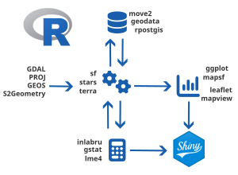
Données spatiales
| Type d’objet | Description |
sf
|
stars
|
terra
|
|---|---|---|---|---|
| Vecteur | Où sont les entités? | |||
| Points | Emplacements discrets avec coordonnées et attributs. | ✓ | ✓ | |
| Lignes | Entités linéaires comme les routes, rivières ou tracés. | ✓ | ✓ | |
| Polygones | Surfaces comme les lacs, zones d’étude ou limites administratives. | ✓ | ✓ | |
| Raster | Quelle est la valeur à travers l’espace? | |||
| Rasters | Surfaces quadrillées avec des valeurs stockées dans des cellules. | ✓ | ✓ |
Principaux paquets spatiaux R
Nouvel écosystème
sf 🌐
- standard simple features
- données vectorielles
- compatible tidyverse
stars 🌐
- tableaux spatio-temporels
- rasters et datacubes
- compagnon solide de
sf
terra 🌐
- support vecteur et raster
- outils raster puissants
- flux de travail SIG complet
Ancien écosystème
Paquets accompagnateurs
Manipulation de données et mesures
tidyverse 🌐
- flux de travail tabulaires autour des objets spatiaux
- filtrage, jointure, regroupement, résumé
tidyterra 🌐
- verbes tidy et fonctions de visualisation pour
terra - une extension utile, pas un remplacement de
terra
units 🌐
- longueurs, surfaces et distances explicites dans
sf - contraste avec
terra=> mesures numériques
Visualisation
ggplot2 🌐
- graphiques statiques de qualité pour communication
- cartes en couches flexibles
mapview 🌐
- exploration interactive rapide
- vérifications visuelles rapides des couches spatiales
tmap 🌐
- flux de travail de cartographie
- cartes statiques et interactives
Ce sont des exemples de paquets accompagnateurs particulièrement pertinents. L’écosystème spatial de R est vaste et actif, et ne se limite pas aux paquets présentés ici.
Une note sur les IDE
Que sont les IDE? Environnements de développement intégrés
RStudio 🌐
- environnement par défaut de longue date pour R
- console, éditeur, graphiques, fichiers et paquets intégrés
- un bon point de départ pour la plupart des utilisateurs de R
VS Code 🌐
- éditeur généraliste avec support R via des extensions
- adapté aux flux de travail mixtes R, Python, Quarto, Git
- une bonne option pour les projets multilingues
Positron 🌐
- nouvel IDE de science des données de Posit, similaire à VS Code
- combine scripts, notebooks et fonctionnalités IDE
- à suivre au fur et à mesure que l’écosystème évolue
L’objectif de cet atelier n’est pas d’enseigner un IDE spécifique. Utilisez l’environnement qui vous permet de travailler confortablement avec des scripts, objets, graphiques et sorties spatiales.
Une note sur les pipes
Que sont les pipes?
Les pipes transmettent la sortie d’une étape à la suivante, rendant les flux de travail à plusieurs étapes plus faciles à lire et à écrire. Nous les mentionnons explicitement car ils sont utilisés tout au long de l’atelier.
Une note sur le code
Choisissez vos outils
Naviguer dans le code de la présentation
Les diapositives montrent souvent la même opération deux fois : une fois avec sf/stars, et une fois avec terra.
Vous n’avez pas besoin de suivre les deux versions en même temps. Utilisez les onglets pour rester dans l’écosystème que vous avez choisi pour l’atelier.
Une note sur les exercices
Choisissez votre parcours
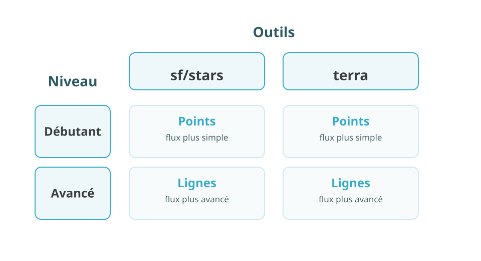
Faites les deux niveaux!
Les participants plus avancés peuvent compléter les deux parcours, car il y aura des flux de travail avancés disponibles avec les points et les lignes.
Données vectorielles dans R
sf & terra
Lire des données vectorielles
Simple feature collection with 1 feature and 1 field
Geometry type: POLYGON
Dimension: XY
Bounding box: xmin: -73 ymin: 46.55 xmax: -72.6 ymax: 47
Geodetic CRS: WGS 84
name geom
1 study_area POLYGON ((-73 46.55, -72.6 ...Simple feature collection with 4 features and 2 fields
Geometry type: POLYGON
Dimension: XY
Bounding box: xmin: -73 ymin: 46.55 xmax: -72.6 ymax: 47
Geodetic CRS: WGS 84
zone_id zone_type geom
1 NW forest POLYGON ((-73 46.775, -72.8...
2 NE urban POLYGON ((-72.8 46.775, -72...
3 SW wetland POLYGON ((-73 46.55, -72.8 ...
4 SE agriculture POLYGON ((-72.8 46.55, -72....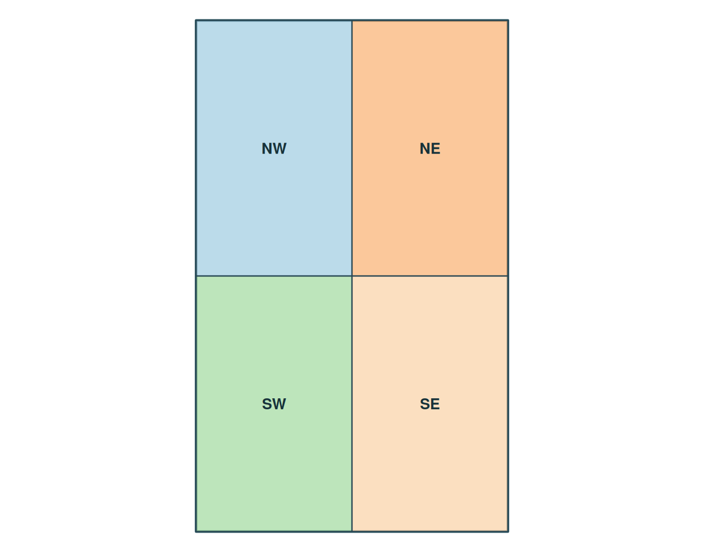
Convertir un tableau en points
Simple feature collection with 6 features and 8 fields
Geometry type: POINT
Dimension: XY
Bounding box: xmin: -72.92 ymin: 46.7 xmax: -72.72 ymax: 46.94
Geodetic CRS: WGS 84
obs_id track_id seq timestamp lon lat category value
1 OBS01 A 1 2026-03-01 08:00:00 -72.92 46.78 urban 14
2 OBS02 A 2 2026-03-01 09:00:00 -72.86 46.83 urban 16
3 OBS03 A 3 2026-03-01 10:00:00 -72.79 46.88 forest 21
4 OBS04 A 4 2026-03-01 11:00:00 -72.72 46.94 forest 24
5 OBS05 B 1 2026-03-02 08:00:00 -72.88 46.70 agriculture 11
6 OBS06 B 2 2026-03-02 09:00:00 -72.83 46.76 agriculture 13
geometry
1 POINT (-72.92 46.78)
2 POINT (-72.86 46.83)
3 POINT (-72.79 46.88)
4 POINT (-72.72 46.94)
5 POINT (-72.88 46.7)
6 POINT (-72.83 46.76)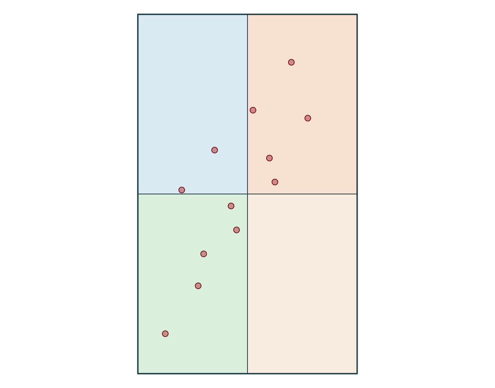
obs_id track_id seq timestamp category value
1 OBS01 A 1 2026-03-01 08:00:00 urban 14
2 OBS02 A 2 2026-03-01 09:00:00 urban 16
3 OBS03 A 3 2026-03-01 10:00:00 forest 21
4 OBS04 A 4 2026-03-01 11:00:00 forest 24
5 OBS05 B 1 2026-03-02 08:00:00 agriculture 11
6 OBS06 B 2 2026-03-02 09:00:00 agriculture 13Inspecter les données vectorielles
[1] POLYGON POLYGON POLYGON POLYGON
18 Levels: GEOMETRY POINT LINESTRING POLYGON MULTIPOINT ... TRIANGLE[1] "WGS 84" xmin ymin xmax ymax
-73.00 46.55 -72.60 47.00 Projections spatiales
L’information CRS vous indique comment les coordonnées sont référencées sur la Terre. Quand vous avez besoin d’inspecter ou d’identifier une projection, epsg.io est un outil de recherche utile.
Transformer le CRS
[1] "EPSG:32198" xmin ymin xmax ymax
-340347.4 299996.5 -318731.5 336605.7 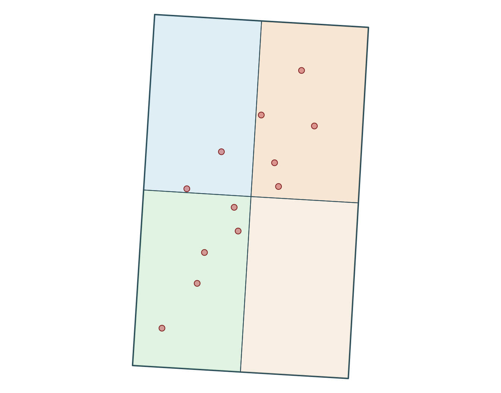
[1] "+proj=lcc +lat_0=44 +lon_0=-68.5 +lat_1=60 +lat_2=46 +x_0=0 +y_0=0 +datum=NAD83 +units=m +no_defs"SpatExtent : -340347.355525386, -318731.482880504, 299996.469057655, 336605.697992394 (xmin, xmax, ymin, ymax)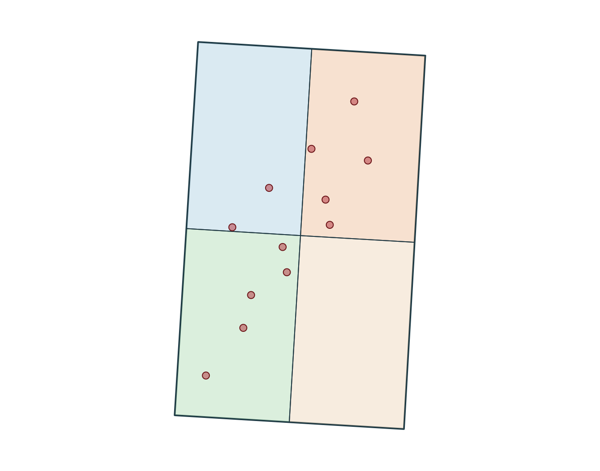
Mesures
Utilisez un CRS adapté lorsque vous avez besoin de distances, longueurs ou surfaces interprétables.
Exporter les sorties vectorielles
Exercice 1
Fondements vectoriels
Importer, inspecter, transformer, exporter
Bonus : utiliser R comme un convertisseur de fichiers spatiaux
Convertir des points en lignes
Simple feature collection with 3 features and 1 field
Geometry type: LINESTRING
Dimension: XY
Bounding box: xmin: -72.95 ymin: 46.6 xmax: -72.69 ymax: 46.94
Geodetic CRS: WGS 84
# A tibble: 3 × 2
track_id geometry
<chr> <LINESTRING [°]>
1 A (-72.92 46.78, -72.86 46.83, -72.79 46.88, -72.72 46.94)
2 B (-72.88 46.7, -72.83 46.76, -72.76 46.82, -72.69 46.87)
3 C (-72.95 46.6, -72.89 46.66, -72.82 46.73, -72.75 46.79)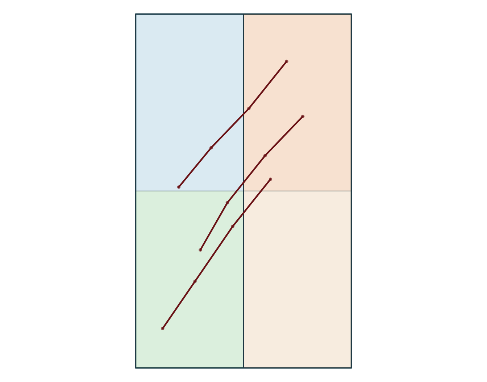
Cartographie statique rapide
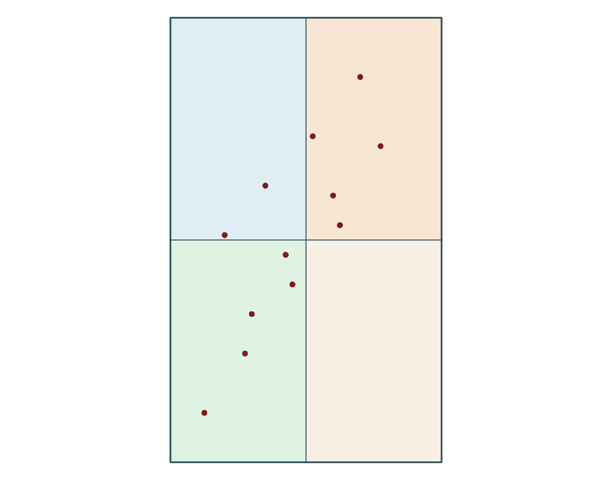
Cartographie interactive rapide
Exporter des cartes interactives
object file format
1 mapview sf map fileedd2af775b7.html htmlPartagez vos cartes!
Les sorties interactives mapview peuvent être sauvegardées comme fichiers HTML autonomes et partagées comme n’importe quel document web.
Exercice 2
Fondements vectoriels appliqués à vos données
Importer, inspecter, transformer, exporter, visualiser
Filtrer vers une zone d’étude
Simple feature collection with 5 features and 8 fields
Geometry type: POINT
Dimension: XY
Bounding box: xmin: -72.79 ymin: 46.79 xmax: -72.69 ymax: 46.94
Geodetic CRS: WGS 84
obs_id track_id seq timestamp lon lat category value
1 OBS03 A 3 2026-03-01 10:00:00 -72.79 46.88 forest 21
2 OBS04 A 4 2026-03-01 11:00:00 -72.72 46.94 forest 24
3 OBS07 B 3 2026-03-02 10:00:00 -72.76 46.82 wetland 17
4 OBS08 B 4 2026-03-02 11:00:00 -72.69 46.87 wetland 18
5 OBS12 C 4 2026-03-03 11:00:00 -72.75 46.79 urban 19
geometry
1 POINT (-72.79 46.88)
2 POINT (-72.72 46.94)
3 POINT (-72.76 46.82)
4 POINT (-72.69 46.87)
5 POINT (-72.75 46.79)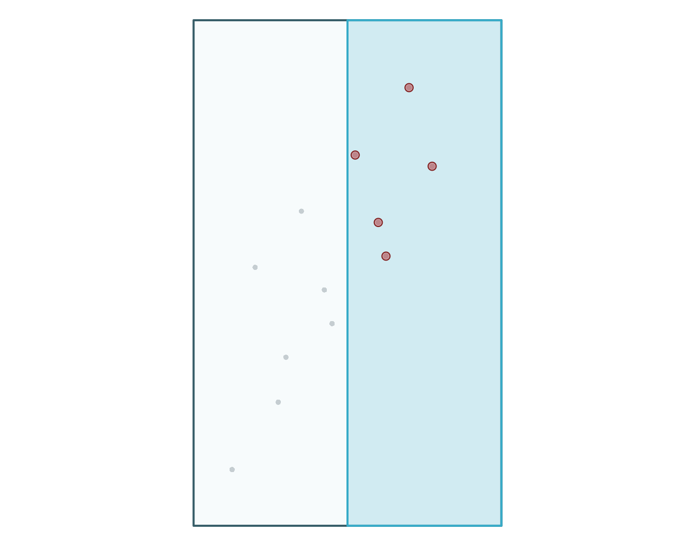
obs_id track_id seq timestamp category value
1 OBS03 A 3 2026-03-01 10:00:00 forest 21
2 OBS04 A 4 2026-03-01 11:00:00 forest 24
3 OBS07 B 3 2026-03-02 10:00:00 wetland 17
4 OBS08 B 4 2026-03-02 11:00:00 wetland 18
5 OBS12 C 4 2026-03-03 11:00:00 urban 19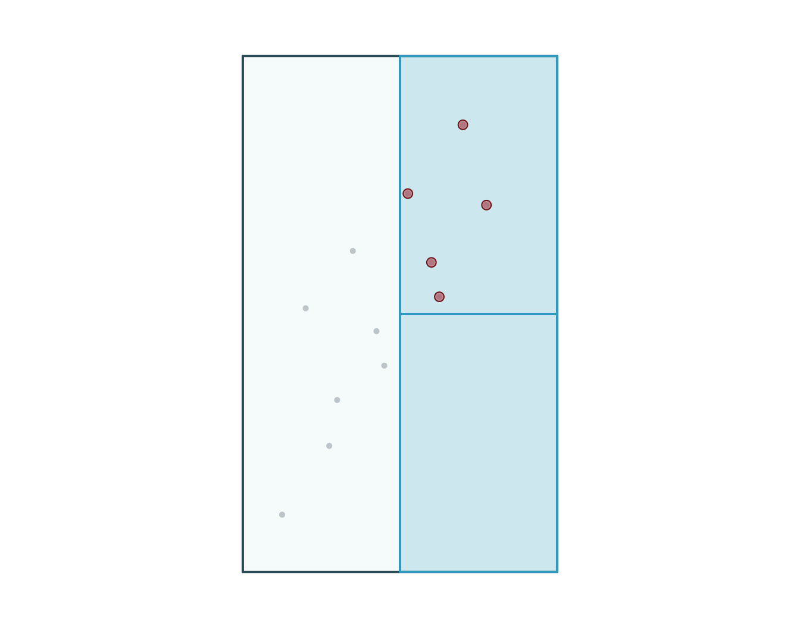
Mesurer les entités vectorielles
zone_id area_km2
1 NW 380.0
2 NE 380.0
3 SW 381.9
4 SE 381.9 track_id length_km
1 A 23.4
2 B 23.9
3 C 26.1 obs_id boundary_km
1 OBS01 6.1
2 OBS02 10.7
3 OBS03 13.3
4 OBS04 6.7
5 OBS05 9.2
6 OBS06 13.0 zone_id area_km2
1 NW 381.3
2 NE 381.3
3 SW 382.9
4 SE 382.9 track_id length_km
1 A 23.4
2 B 23.9
3 C 26.1 obs_id boundary_km
1 OBS01 6.1
2 OBS02 10.7
3 OBS03 13.3
4 OBS04 6.7
5 OBS05 9.2
6 OBS06 13.0Note
sf retourne des mesures avec unités. terra retourne des valeurs numériques dont la signification depend du CRS et de la fonction utilisée.
Joindre des attributs aux entités
obs_id track_id seq timestamp lon lat category value
1 OBS01 A 1 2026-03-01 08:00:00 -72.92 46.78 urban 14
2 OBS02 A 2 2026-03-01 09:00:00 -72.86 46.83 urban 16
3 OBS03 A 3 2026-03-01 10:00:00 -72.79 46.88 forest 21
4 OBS04 A 4 2026-03-01 11:00:00 -72.72 46.94 forest 24
5 OBS05 B 1 2026-03-02 08:00:00 -72.88 46.70 agriculture 11
6 OBS06 B 2 2026-03-02 09:00:00 -72.83 46.76 agriculture 13
zone_id zone_type
1 NW forest
2 NW forest
3 NE urban
4 NE urban
5 SW wetland
6 SW wetland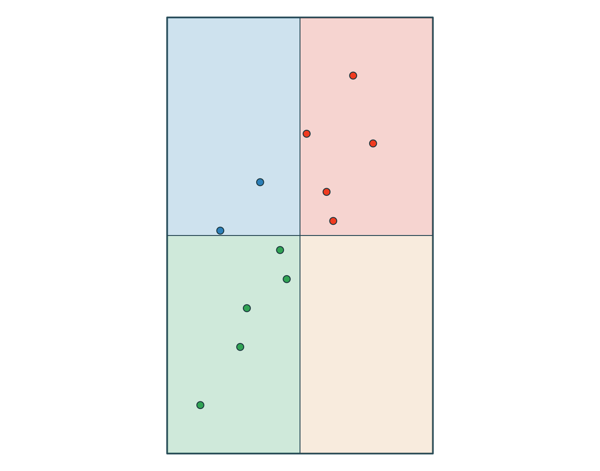
obs_id track_id seq timestamp category value zone_id zone_type
1 OBS01 A 1 2026-03-01 08:00:00 urban 14 NW forest
2 OBS02 A 2 2026-03-01 09:00:00 urban 16 NW forest
3 OBS03 A 3 2026-03-01 10:00:00 forest 21 NE urban
4 OBS04 A 4 2026-03-01 11:00:00 forest 24 NE urban
5 OBS05 B 1 2026-03-02 08:00:00 agriculture 11 SW wetland
6 OBS06 B 2 2026-03-02 09:00:00 agriculture 13 SW wetlandIntersecter les géométries
# A tibble: 6 × 3
track_id zone_id zone_type
<chr> <chr> <chr>
1 A NW forest
2 B NW forest
3 A NE urban
4 B NE urban
5 C NE urban
6 B SW wetland 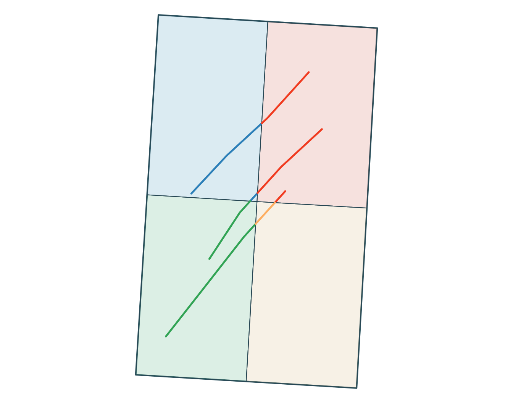
Note
Utilisez une jointure quand vous voulez attacher des attributs. Utilisez une intersection quand vous voulez que le chevauchement crée de nouvelles géométries.
Zones tampon
[1] POLYGON
18 Levels: GEOMETRY POINT LINESTRING POLYGON MULTIPOINT ... TRIANGLE obs_id track_id seq timestamp lon lat category value
1 OBS01 A 1 2026-03-01 08:00:00 -72.92 46.78 urban 14
2 OBS02 A 2 2026-03-01 09:00:00 -72.86 46.83 urban 16
3 OBS03 A 3 2026-03-01 10:00:00 -72.79 46.88 forest 21
4 OBS04 A 4 2026-03-01 11:00:00 -72.72 46.94 forest 24
5 OBS05 B 1 2026-03-02 08:00:00 -72.88 46.70 agriculture 11
6 OBS06 B 2 2026-03-02 09:00:00 -72.83 46.76 agriculture 13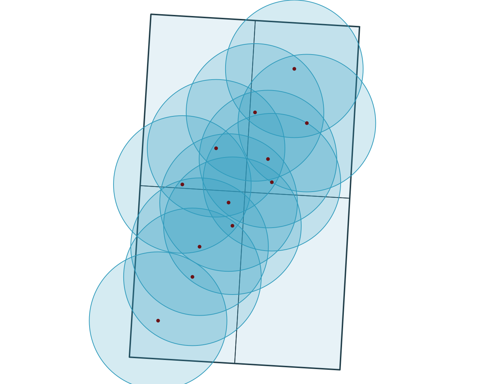
[1] "polygons" obs_id track_id seq timestamp category value
1 OBS01 A 1 2026-03-01 08:00:00 urban 14
2 OBS02 A 2 2026-03-01 09:00:00 urban 16
3 OBS03 A 3 2026-03-01 10:00:00 forest 21
4 OBS04 A 4 2026-03-01 11:00:00 forest 24
5 OBS05 B 1 2026-03-02 08:00:00 agriculture 11
6 OBS06 B 2 2026-03-02 09:00:00 agriculture 13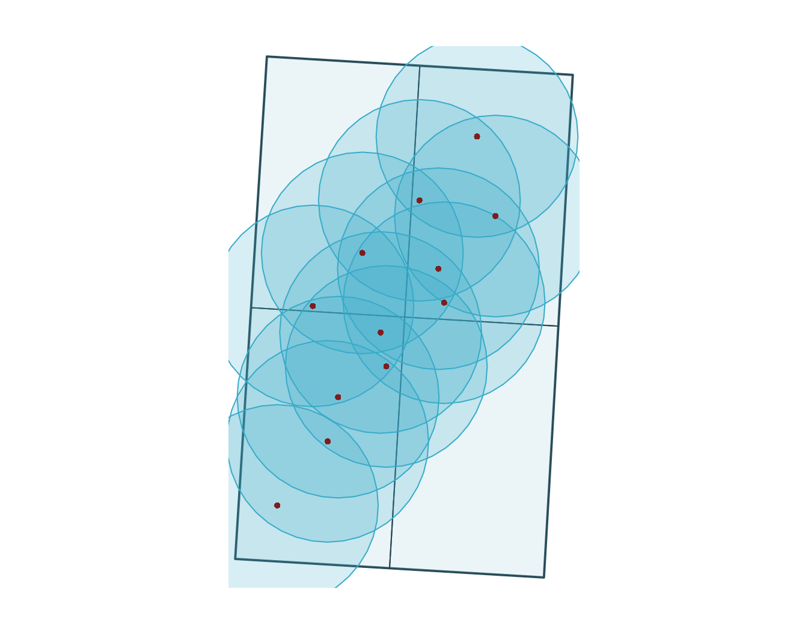
Note
Les zones tampon créent de nouvelles géométries à une distance fixe autour des entités, elles sont donc généralement réalisées dans un CRS projeté avec des unités de distance interprétables.
Exercice 3
Opérations vectorielles
Filtrer, mesurer, joindre, intersecter, zone tampon
Données raster dans R
stars & terra
Lire des données raster
stars object with 2 dimensions and 1 attribute
attribute(s):
Min. 1st Qu. Median Mean 3rd Qu. Max.
surface.tif 9.6 40.8325 48.5 50.00007 59.805 100.32
dimension(s):
from to offset delta refsys point x/y
x 1 40 -73 0.01 WGS 84 FALSE [x]
y 1 40 47 -0.01125 WGS 84 FALSE [y]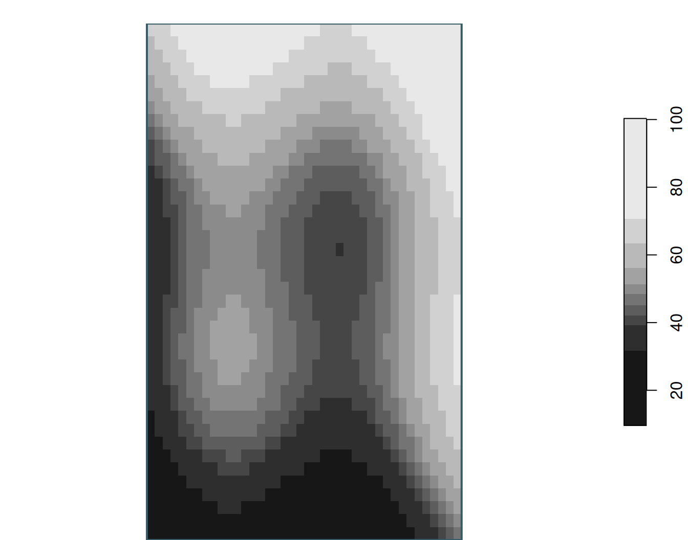
class : SpatRaster
size : 40, 40, 1 (nrow, ncol, nlyr)
resolution : 0.01, 0.01125 (x, y)
extent : -73, -72.6, 46.55, 47 (xmin, xmax, ymin, ymax)
coord. ref. : lon/lat WGS 84 (EPSG:4326)
source : surface.tif
name : surface_value
min value : 9.60
max value : 100.32 Inspecter les données raster
from to offset delta refsys point x/y
x 1 40 -73 0.01 WGS 84 FALSE [x]
y 1 40 47 -0.01125 WGS 84 FALSE [y] xmin ymin xmax ymax
-73.00 46.55 -72.60 47.00 [1] "WGS 84"Exporter les sorties raster
Visualisation statique de rasters

Cartographie interactive de rasters
Exercice 4
Fondements raster
Importer, inspecter, transformer, exporter, visualiser
Découper, masquer, projeter
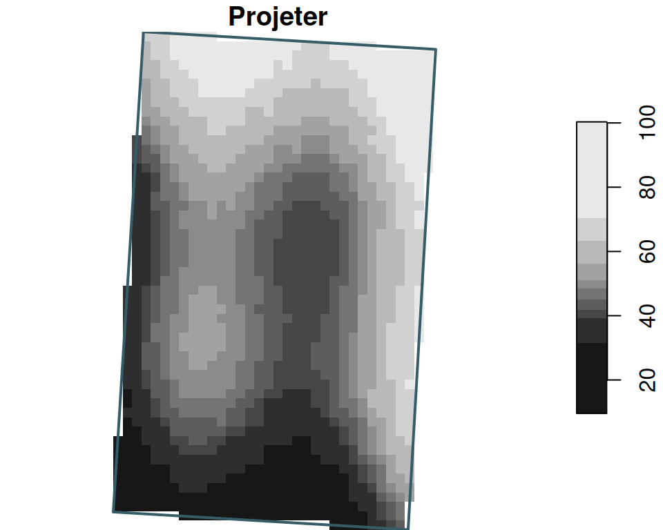
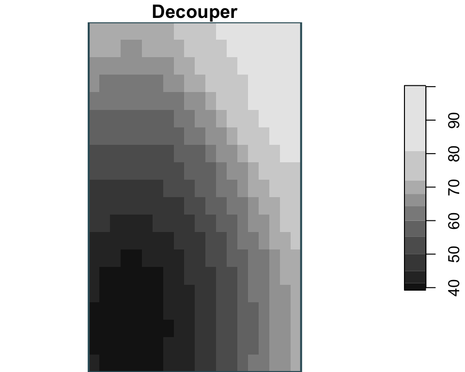
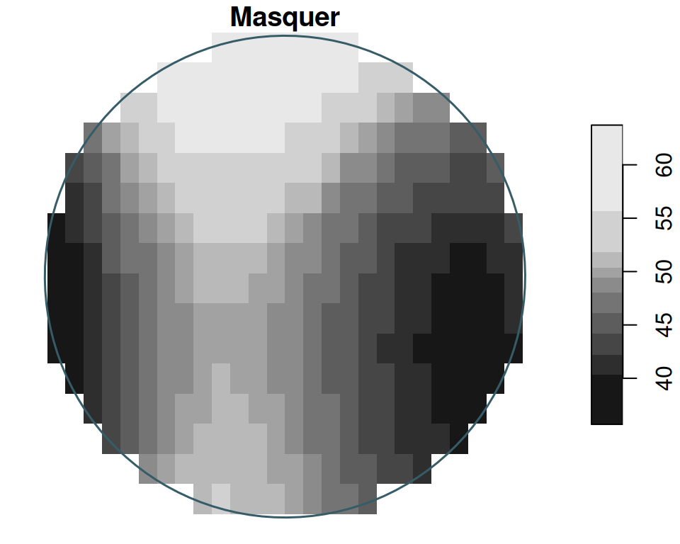
Manipulations raster
Ici les trois opérations sont présentées indépendamment : project change le CRS, crop utilisé une zone comme étendue cible, et mask conserve les cellules uniquement à l’intérieur d’une géométrie tampon.
Rééchantillonnage
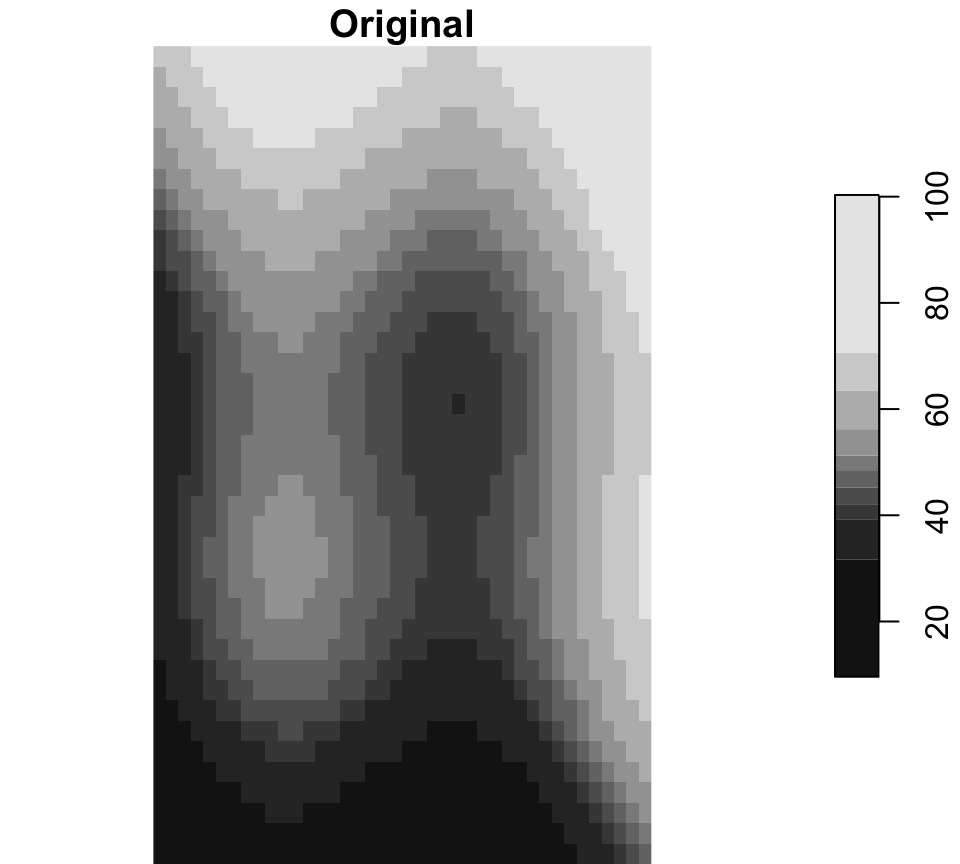
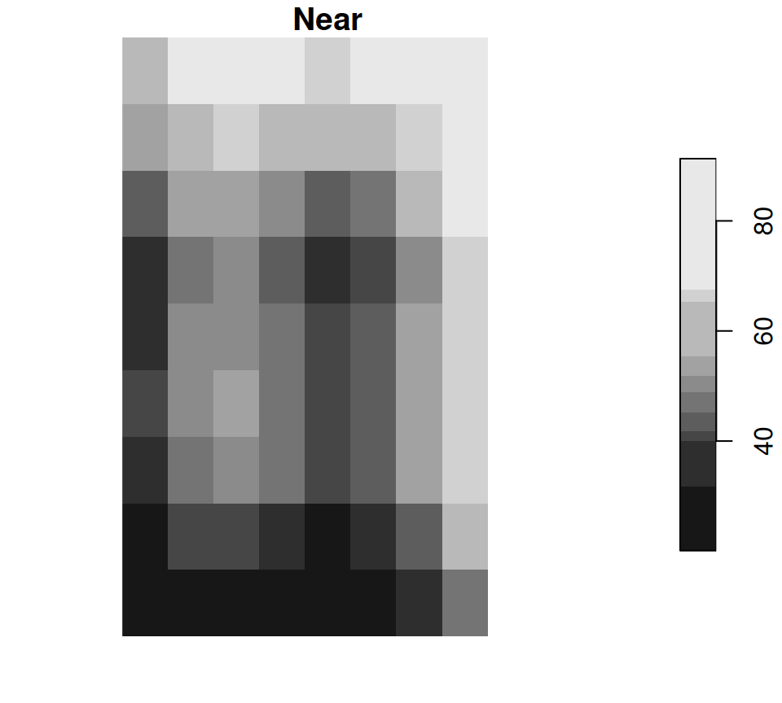
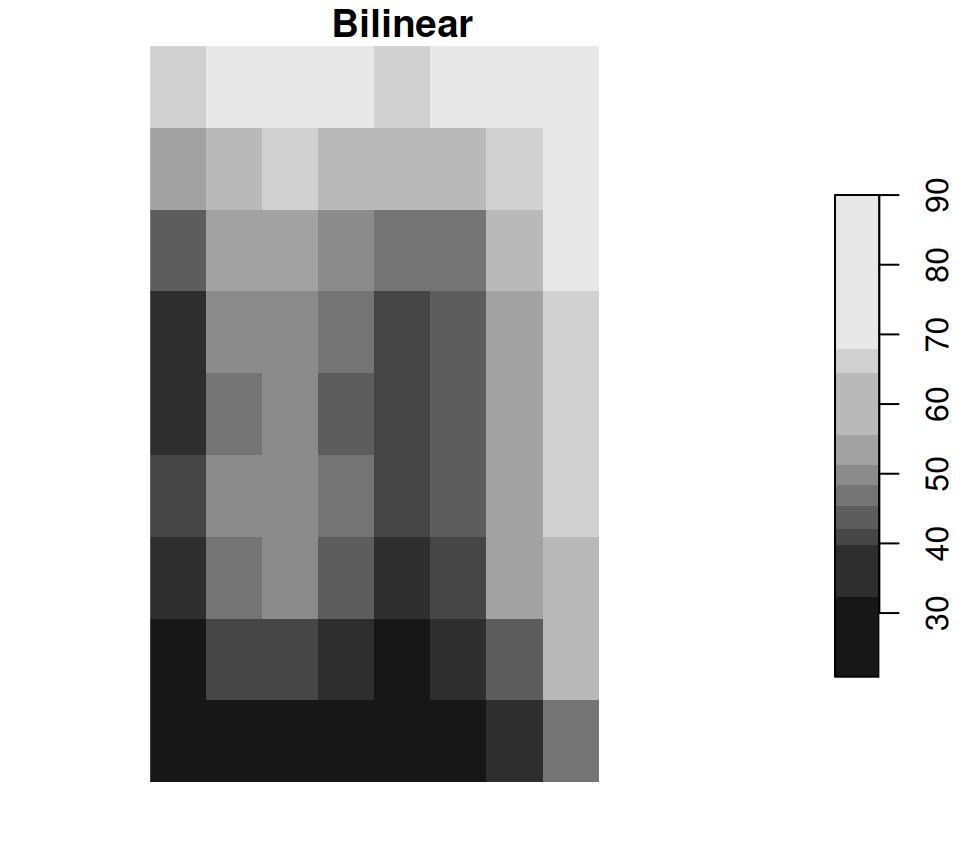
Le rééchantillonnage modifie la grille de cellules
Near est courant pour les rasters categoriques, tandis que bilinear est courant pour les surfaces continues.
Couches raster multiples
[1] "surface.tif" "surface_alt"[1] 2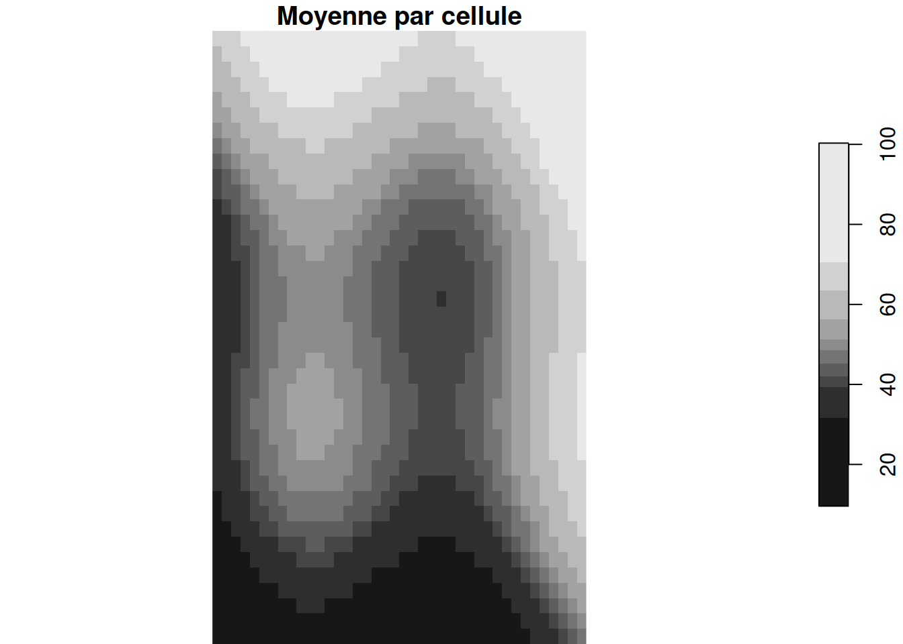
Rasters multi-couches
Peuvent représenter des bandes, variables ou pas de temps. Les fonctions par cellule combinent l’information à travers les couches.
Exercice 5
Opérations raster
Projeter, découper, masquer, rééchantillonner, opérations sur les couches
Flux de travail intégrés
Travailler avec vecteurs et rasters
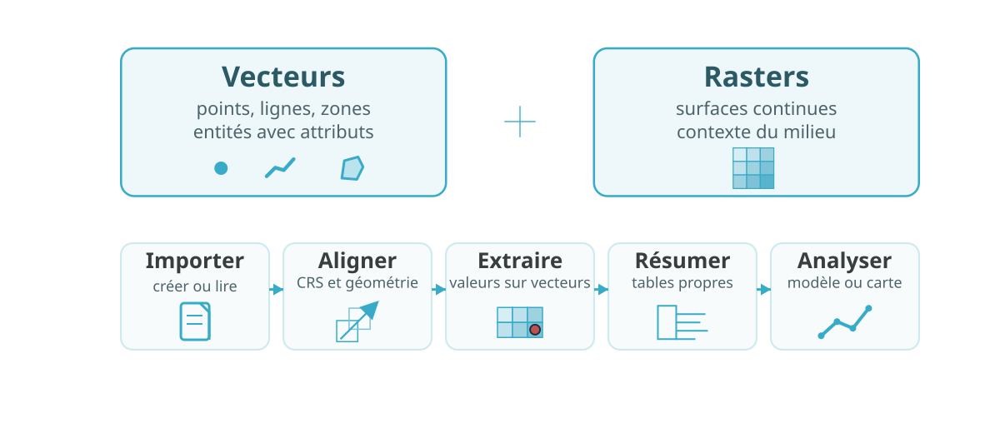
Extraction raster par points
obs_id track_id seq timestamp lon lat category value
1 OBS01 A 1 2026-03-01 08:00:00 -72.92 46.78 urban 14
2 OBS02 A 2 2026-03-01 09:00:00 -72.86 46.83 urban 16
3 OBS03 A 3 2026-03-01 10:00:00 -72.79 46.88 forest 21
4 OBS04 A 4 2026-03-01 11:00:00 -72.72 46.94 forest 24
5 OBS05 B 1 2026-03-02 08:00:00 -72.88 46.70 agriculture 11
6 OBS06 B 2 2026-03-02 09:00:00 -72.83 46.76 agriculture 13
zone_id zone_type surface_value
1 NW forest 49.71
2 NW forest 48.70
3 NE urban 47.72
4 NE urban 61.39
5 SW wetland 51.67
6 SW wetland 45.88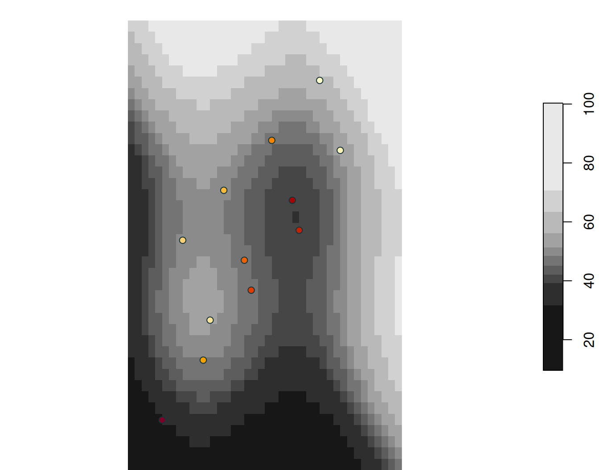
obs_id zone_id zone_type surface_value
1 OBS01 NW forest 48.69
2 OBS02 NW forest 49.60
3 OBS03 NE urban 47.72
4 OBS04 NE urban 59.98
5 OBS05 SW wetland 51.67
6 OBS06 SW wetland 47.16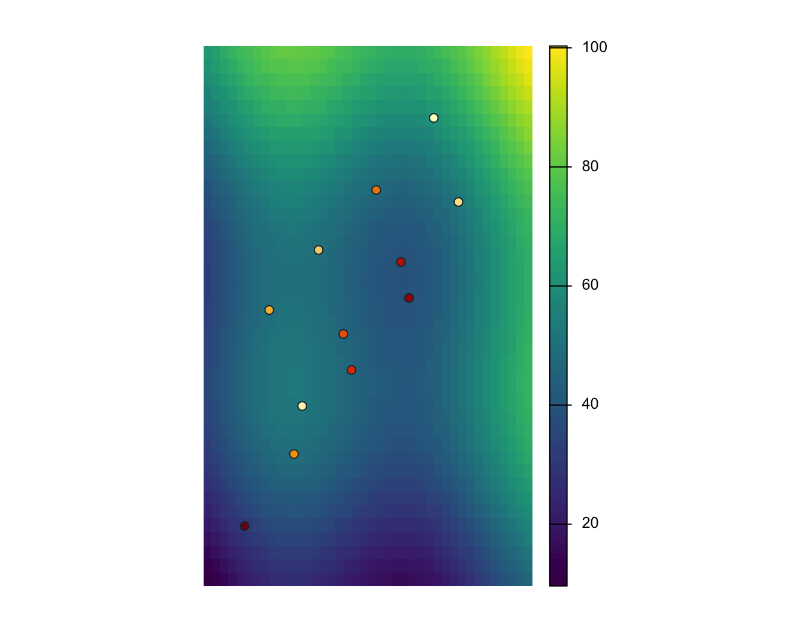
Extraction raster par lignes
# A tibble: 3 × 2
track_id surface_value
<chr> <dbl>
1 A 50.0
2 B 45.0
3 C 44.2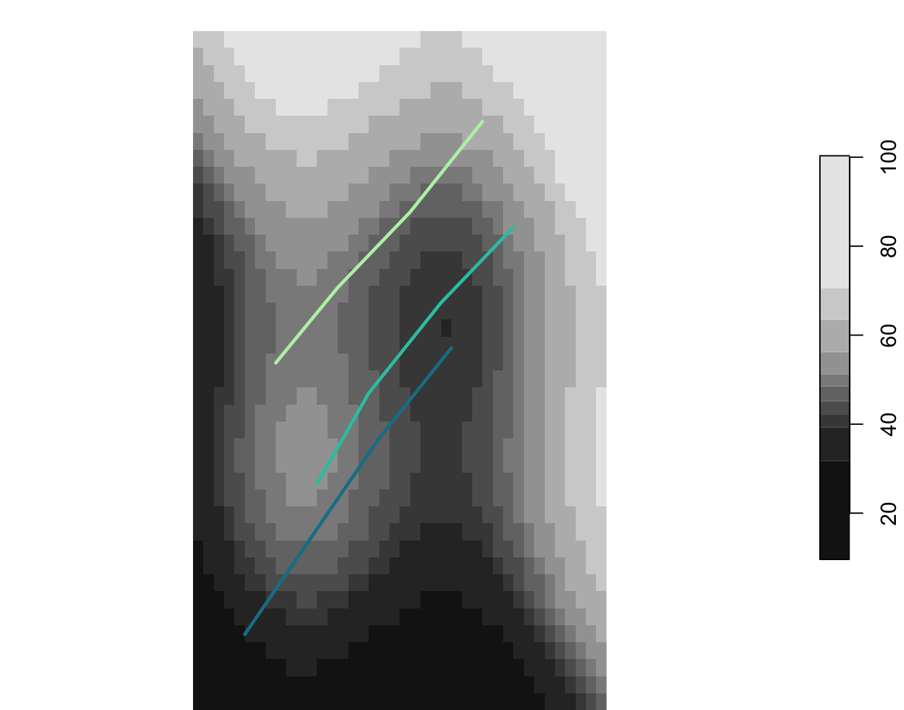
Extraction raster par polygones
zone_id zone_type surface_value
1 NW forest 55.93852
2 NE urban 60.33677
3 SW wetland 39.66305
4 SE agriculture 44.06193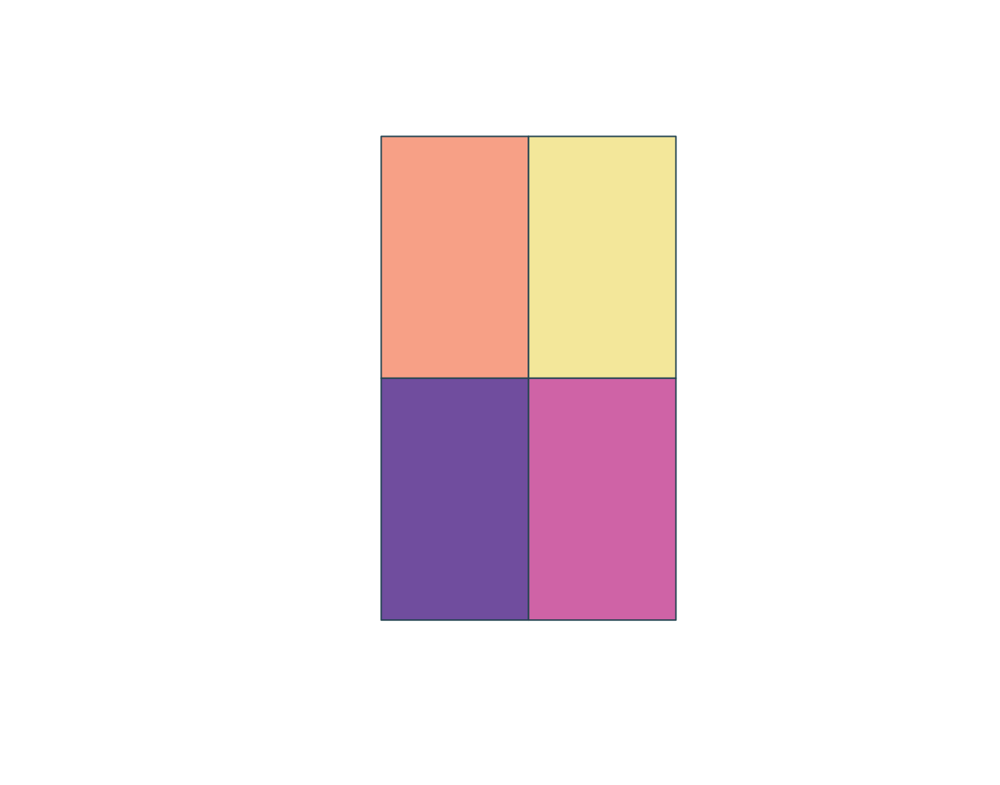
Résumer les valeurs extraites
# A tibble: 3 × 5
zone_id zone_type point_n mean_surface mean_value
<chr> <chr> <int> <dbl> <dbl>
1 NE urban 5 48.4 19.8
2 NW forest 2 49.2 15
3 SW wetland 5 44.7 11.6# A tibble: 3 × 5
zone_id zone_type point_n mean_surface mean_value
<chr> <chr> <int> <dbl> <dbl>
1 NE urban 5 47.6 19.8
2 NW forest 2 49.1 15
3 SW wetland 5 44.5 11.6Construire des tableaux d’analyse
# A tibble: 3 × 6
zone_id zone_type point_n mean_surface mean_value area_km2
<chr> <chr> <int> <dbl> <dbl> <dbl>
1 NE urban 5 48.4 19.8 380
2 NW forest 2 49.2 15 380
3 SW wetland 5 44.7 11.6 382.# A tibble: 3 × 6
zone_id zone_type point_n mean_surface mean_value area_km2
<chr> <chr> <int> <dbl> <dbl> <dbl>
1 NE urban 5 47.6 19.8 381.
2 NW forest 2 49.1 15 381.
3 SW wetland 5 44.5 11.6 383.Exercice 6
Flux de travail intégrés
Extraire, résumer, construire des tableaux d’analyse
Analyses spatiales
Analyses spatiales
- les analyses spatiales sont un domaine très vaste
- cet atelier ne vise pas a couvrir toute cette étendue
- notre accent est mis sur la préparation des données spatiales pour l’analyse
- nous utilisons des GLM et des KDE simples comme exemples illustratifs de ce qui peut suivre
Le point important ici n’est pas les analyses elles-mêmes. Le point est le flux de travail qui vous amène des données spatiales aux entrées prêtes pour l’analyse.
Préparer les données pour l’analyse
obs_id track_id zone_id zone_type category value surface_value
1 OBS01 A NW forest urban 14 49.71
2 OBS02 A NW forest urban 16 48.70
3 OBS03 A NE urban forest 21 47.72
4 OBS04 A NE urban forest 24 61.39
5 OBS05 B SW wetland agriculture 11 51.67
6 OBS06 B SW wetland agriculture 13 45.88 obs_id track_id zone_id zone_type category value surface_value
1 OBS01 A NW forest urban 14 48.69
2 OBS02 A NW forest urban 16 49.60
3 OBS03 A NE urban forest 21 47.72
4 OBS04 A NE urban forest 24 59.98
5 OBS05 B SW wetland agriculture 11 51.67
6 OBS06 B SW wetland agriculture 13 47.16Un GLM simple
term Estimate Std..Error z.value Pr...z..
1 (Intercept) 2.178 0.536 4.064 0.000
2 surface_value 0.011 0.010 1.052 0.293
3 zone_typeurban 0.283 0.208 1.356 0.175
4 zone_typewetland -0.211 0.229 -0.921 0.357 term Estimate Std..Error z.value Pr...z..
1 (Intercept) 2.114 0.550 3.841 0.000
2 surface_value 0.012 0.011 1.144 0.253
3 zone_typeurban 0.292 0.209 1.399 0.162
4 zone_typewetland -0.205 0.229 -0.897 0.370Bonus : GLM avancé
pseudo_points <- st_sample(aoi_qc, size = nrow(points_qc), exact = TRUE) |>
st_as_sf() |>
st_join(zones_qc[, c("zone_id", "zone_type")])
pseudo_points$surface_value <- st_extract(surface_qc, pseudo_points)[[1]]
pseudo_points$presence <- 0
points_qc$presence <- 1
pa_data <- bind_rows(points_qc, pseudo_points) |>
st_drop_geometry() |>
filter(!is.na(zone_id), !is.na(surface_value))
glm_pa <- glm(presence ~ surface_value + zone_type, family = binomial(), data = pa_data) term Estimate Std..Error z.value Pr...z..
1 (Intercept) -16.407 3143.229 -0.005 0.996
2 surface_value -0.039 0.036 -1.098 0.272
3 zone_typeforest 19.471 3143.229 0.006 0.995
4 zone_typeurban 18.584 3143.229 0.006 0.995
5 zone_typewetland 18.917 3143.229 0.006 0.995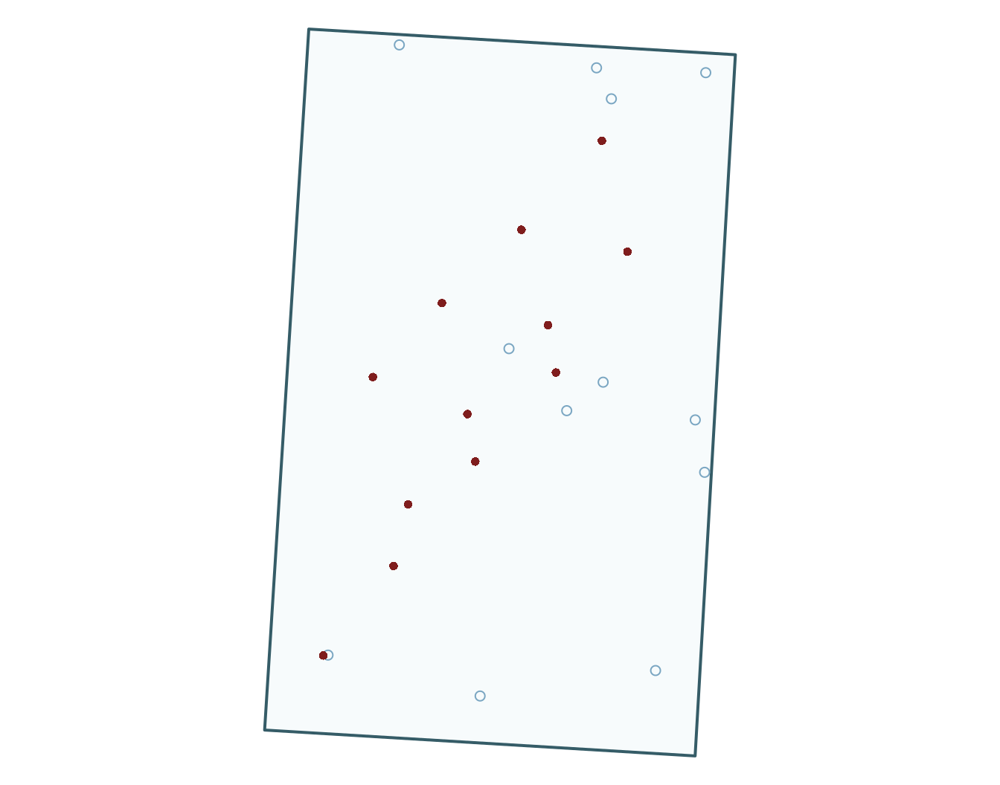
pseudo_points <- spatSample(aoi_qc, size = nrow(points_qc), method = "random", as.points = TRUE)
pseudo_zone <- extract(zones_qc, pseudo_points)
pseudo_surface <- extract(surface_qc, pseudo_points)
pseudo_points <- cbind(pseudo_points, pseudo_zone[, c("zone_id", "zone_type")], pseudo_surface[, "surface_value", drop = FALSE])
pseudo_points$presence <- 0
points_qc$presence <- 1
pa_data <- bind_rows(as.data.frame(points_qc), as.data.frame(pseudo_points)) |>
filter(!is.na(zone_id), !is.na(surface_value))
glm_pa <- glm(presence ~ surface_value + zone_type, family = binomial(), data = pa_data) term Estimate Std..Error z.value Pr...z..
1 (Intercept) -13.913 2782.290 -0.005 0.996
2 surface_value -0.061 0.062 -0.981 0.326
3 zone_typeforest 16.642 2782.287 0.006 0.995
4 zone_typeurban 17.569 2782.287 0.006 0.995
5 zone_typewetland 17.009 2782.287 0.006 0.995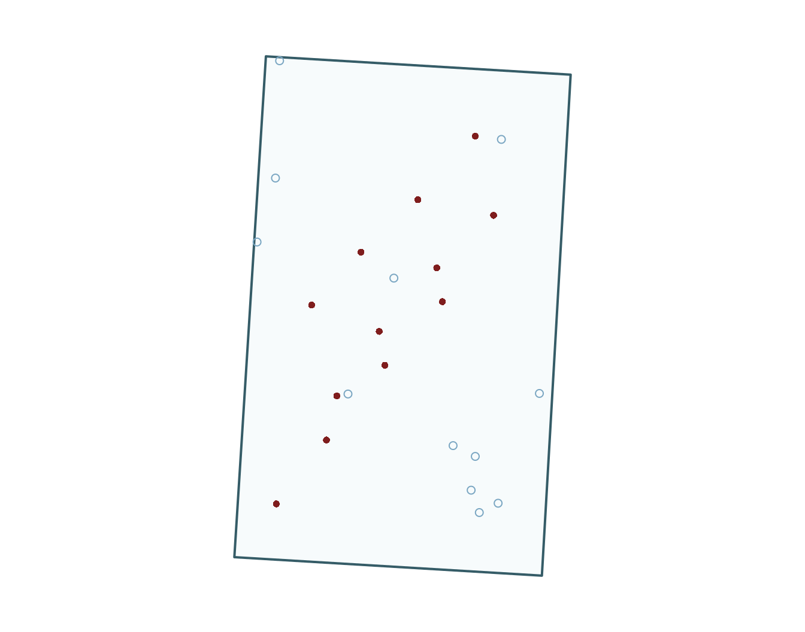
Exercice 7
Analyses spatiales
Préparer les données, ajuster des GLM simples
Bonus : générer des pseudo-absences pour votre GLM avec des données de points
Estimation de densité (KDE)
Utiliser comme outil exploratoire
- utile pour les patrons de points
- produit une surface d’intensite lissee
- aide a visualiser la concentration ou les points chauds
- souvent utilisé pour l’exploration plutôt que pour l’inférence formelle
Estimation de densité (KDE)
$x_head
[1] -344515.3 -344091.9 -343668.5 -343245.1 -342821.7 -342398.3
$y_head
[1] 292854.5 293508.8 294163.2 294817.5 295471.8 296126.1
$z_dim
[1] 80 80$x_head
[1] -344515.3 -344091.9 -343668.5 -343245.1 -342821.7 -342398.3
$y_head
[1] 292854.5 293508.8 294163.2 294817.5 295471.8 296126.1
$z_dim
[1] 80 80Estimation de densité (KDE)
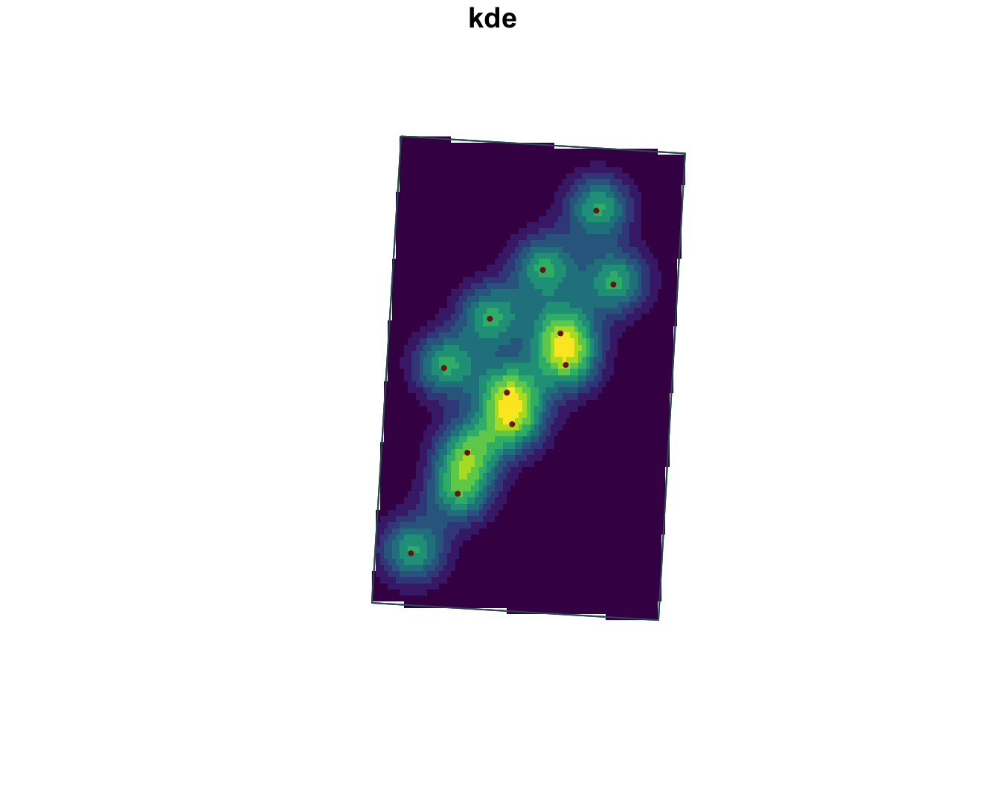
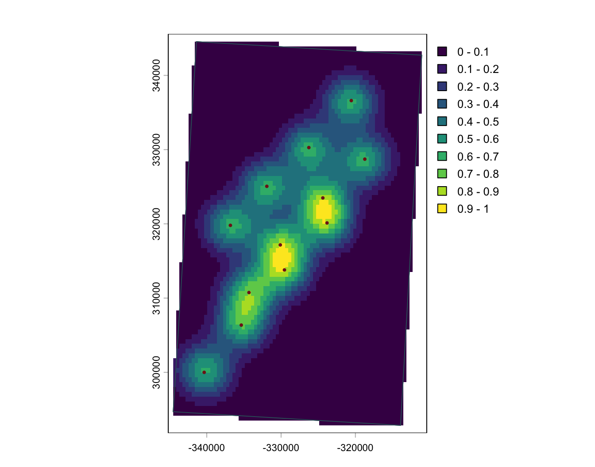
Exercice 8
Analyses spatiales
Ajuster des KDE et explorer les surfaces
Cartographie avancée
Cartographie avancée
Exploration rapide
plot()mapview()- QA/QC rapide et inspection des données
Communication
ggplot2tmap- légendes, palettes, étiquettes et mise en page plus soignées
Utilisez des cartes exploratoires pour inspecter rapidement les données, puis passez à des outils de cartographie plus élaborés quand l’objectif est la communication ou le partage.
Cartographie avancee avec ggplot2
ggplot2 fonctionne particulièrement bien pour des cartes statiques soignées, notamment avec les objets sf et stars.
gg <- ggplot() +
geom_stars(
data = points_kde_sf_plot
) +
scale_fill_viridis_c(name = "KDE") +
geom_sf(
data = zones_qc,
fill = NA,
color = "#355c67"
) +
geom_sf(
data = aoi_qc,
fill = NA,
color = "#17313b"
) +
geom_sf(
data = points_sf_qc,
aes(color = category),
size = 1.7
) +
coord_sf(expand = FALSE) +
theme_minimal()
gg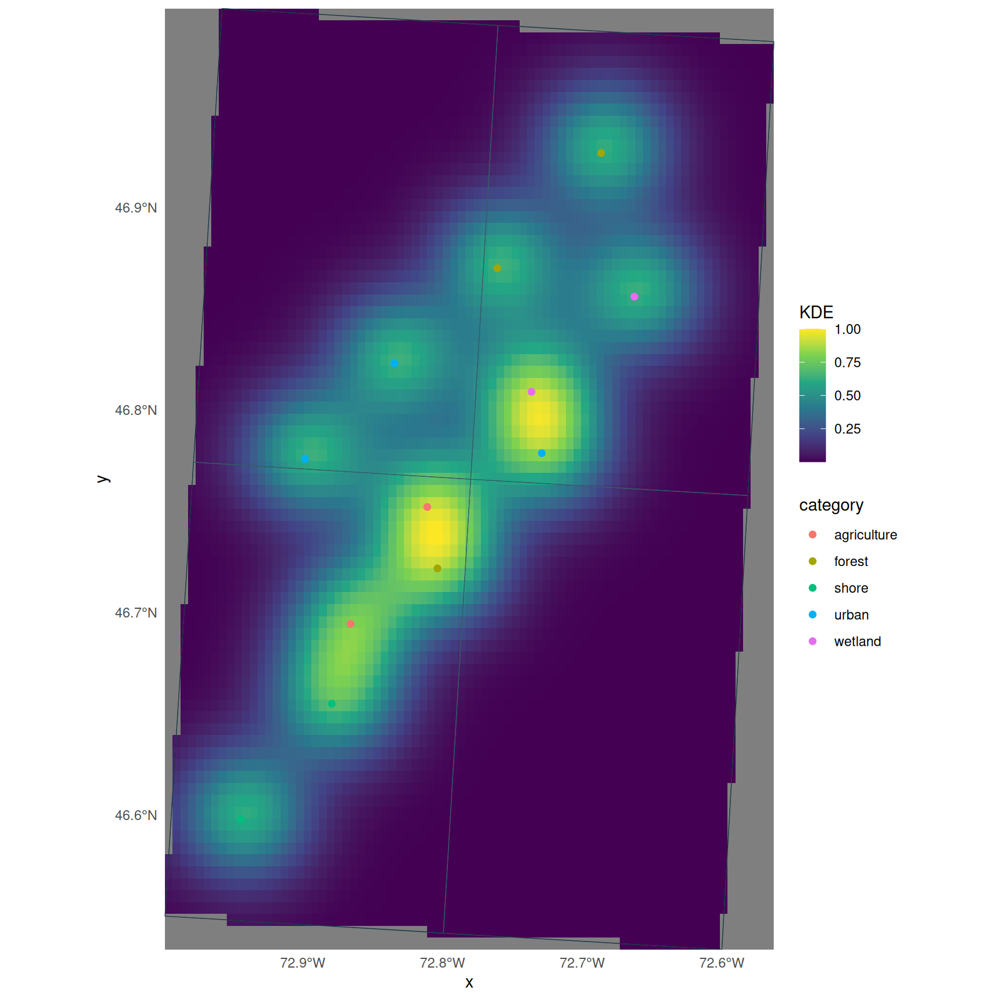
Cartographie avancee avec tmap
tmap est concu pour la cartographie thématique et fonctionne bien quand vous souhaitez une grammaire plus orientée cartographie que ggplot2.
tm <- tm_shape(points_kde_sf_plot) +
tm_raster(col.scale = tm_scale_continuous(
values = "viridis"
)) +
tm_shape(zones_qc) +
tm_borders(col = "#355c67") +
tm_shape(points_sf_qc) +
tm_symbols(
fill = "category",
size = 0.5
) +
tm_shape(aoi_qc) +
tm_borders(col = "#17313b") +
tm_layout(
frame = FALSE,
legend.outside = TRUE
)
tm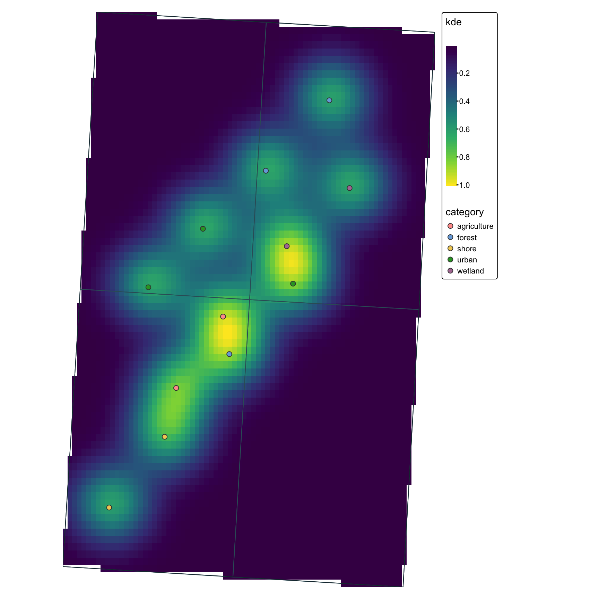
Cartographie avancee avec tmap
Un avantage de tmap est que la même logique cartographique peut souvent être utilisée pour une sortie statique ou pour une carte interactive partagée.
Exporter et partager des cartes
output file tool
1 figure de presentation advanced_map.png ggsave(..., dpi = 300)
2 figure prete pour publication advanced_map.pdf ggsave(...) output file
1 carte thematique statique advanced_map.png
2 carte interactive partagee advanced_map.html
tool
1 tmap_save(...)
2 tmap_mode("view") + tmap_save(...)Exercice 9
Cartographie avancée
Construire, exporter et partager des cartes
Points à retenir
- vecteur et raster sont des modèles de données différents
sf,starsetterracouvrent la plupart des flux de travail spatiaux courants dans R- les décisions de CRS affectent les mesures et les superpositions
- les jointures, intersections, découpages, masques et extractions sont des opérations fondamentales
- l’analyse spatiale dans R est souvent un pont entre les taches SIG et les flux de travail statistiques standards
- traitez R à la fois comme un environnement d’analyse et un SIG
Utilisation de technologies récentes pour les données spatiales
Assistant Shiny App
prompts :
- Create an app that allows users to upload GeoJSON files and visualize them using Leaflet.
- Modify the app to compute the total area when polygons are uploaded and display it in the card header.
- Modify the app to also compute the total length for line géométries and display it in the card header.
Conclusion
- commencez avec des objets spatiaux clairs et un CRS clair
- inspectez et cartographiez tot, puis analysez
- passez des objets spatiaux à des tableaux d’analyse propres
- continuez a construire des flux de travail réutilisables au fur et à mesure que vos analyses grandissent